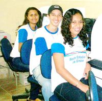
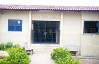
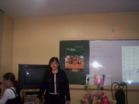
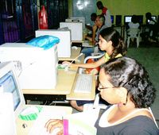
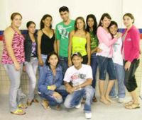
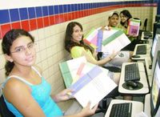

Confira as fotos do projeto

Alunos de Moreno
Alunos de Moreno
Alunos de Moreno

Escola Artur Mendonça

Professora Jane Célia

Alunos de Recife
Alunos de Garanhuns

Turma Maria Jacilda

Alunos de Arcoverde
Escola Carlos Rios
Álbum de Fotos